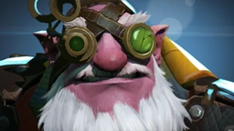

Обо мне
Кардел Остроглаз родился глубоко в горах Кноллена, где смышлёнцы с незапамятных времен жили охотой на странных существ-скалолазов, обитавших над деревней — отстреливая их издали и собирая упавшие с высоких утёсов туши. Наш герой был одним из лучших стрелков своего народа — ружьё словно было продолжением его руки, а выстрел — её прикосновением. В день инициации, когда Кардел должен был стать полноправным членом деревни, его ждало древнее испытание: убить животное на одном из утёсов одним выстрелом со дна долины. Промах лишил бы стрелка всякой чести. Под взглядами всей деревни Кардел выстрелил. Зверь был убит, толпа взревела.
Но чуть только тушу нашли, ликования стихли: старейшины обнаружили, что пуля попала прямо в средний глаз зверя и застряла в жвалах. Этот зловещий знак был описан в тёмном пророчестве, предрекавшем стрелку славу, но обрекая его на изгнание. Один точный выстрел вынудил Кардела расстаться со своим народом — и никто не примет его обратно, пока он не выполнит пророчество, добившись легендарного величия на поле боя.